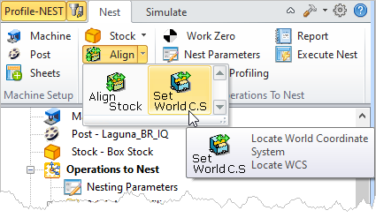
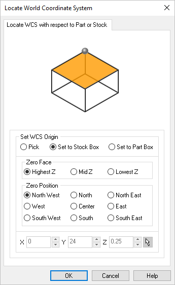

You can set the location of the World Coordinate System (WCS) origin with respect to the geometry. An alternative way of thinking about this is to transform all loaded geometry to an appropriate location. This Locate WCS dialog offers you a variety of ways of accomplishing this.
This dialog can be invoked by selecting Align and Set World CS from the Nest tab under the Machining Browser.  Machining Browser: Set World CS menu item |
The Locate WCS dialog appears as shown below  |
You can set the origin by explicitly picking a point or can set it with respect to the Part or Stock geometry bounding boxes. Pick X / Y / Z / Pick
Set to Stock Box Set to Part Box |
Make a selection to locate the Z zero of the WCS. This is referred to as the Zero Face. Highest Z This tells the system that the Zero Face should be at the Highest Z location of either the Stock or Part, depending on which Set WCS Origin option is selected. Mid Z This tells the system that the Zero Face should be at the Mid Z location of either the Stock or Part, depending on which Set WCS Origin option is selected. Lowest Z This tells the system that the Zero Face should be at the Lowest Z location of either the Stock or Part, depending on which Set WCS Origin option is selected. |
Make a selection to locate the Zero Position of the WCS. You can select one of the cardinal directions listed below. North West Locate the WCS in the XY North West position. North West (High/Med/Low Z) North Locate the WCS in the XY North position. North (High/Med/Low Z) North East Locate the WCS in the XY North East position. North East (High/Med/Low Z) Mid-West Locate the WCS in the XY West position. West (High/Med/Low Z) Center Locate the WCS in the XY Center position. Center (High/Med/Low Z) Mid-East Locate the WCS in the XY East position. East (High/Med/Low Z) South West Locate the WCS in the XY South West position. South West (High/Med/Low Z) South Locate the WCS in the XY South position. South (High/Med/Low Z) South East Locate the WCS in the XY South East position. South East (High/Med/Low Z) |